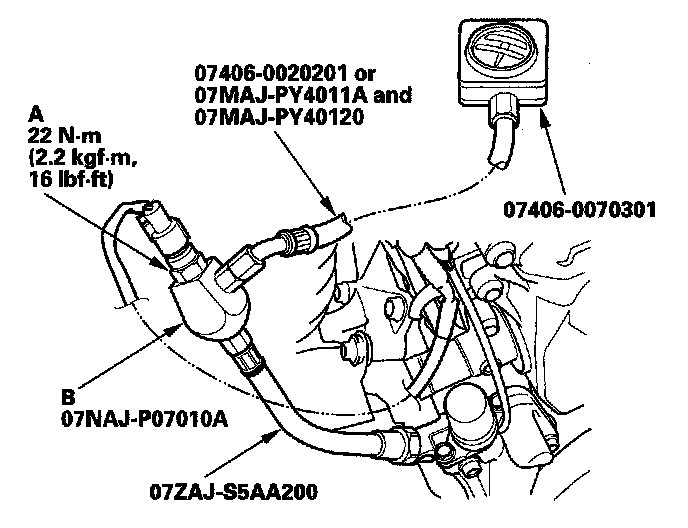

DTC Troubleshooting
DTC P0300: Random Misfire and Any Combination of the Following:DTC P0301: No. 1 Cylinder Misfire Detected
DTC P0302: No. 2 Cylinder Misfire Detected
DTC P0303: No. 3 Cylinder Misfire Detected
DTC P0304: No. 4 Cylinder Misfire Detected
DTC P0305: No. 5 Cylinder Misfire Detected
DTC P0306: No. 6 Cylinder Misfire Detected
Special Tools Required
- Pressure gauge adapter 07NAJ-P07010A
- A/T low pressure gauge W/panel 07406-0070301
- A/T pressure hose 07406-0020201
- A/T pressure hose, 2,210 mm 07MAJ-PY4011A
- A/T pressure adapter 07MAJ-PY40120
- Oil pressure hose 07ZAJ-S5AA200
NOTE:
- Before you troubleshoot, record all freeze data and any on-board snapshot, and review the general troubleshooting information.
- If the misfire is frequent enough to trigger detection of increased emissions during two consecutive driving cycles, the MIL will come on, and DTC P0300 (and some combination of P0301 through P0306) will be stored.
- If the misfire is frequent enough to damage the catalyst, the MIL will blink whenever the misfire occurs, and DTC P0300 (and some combination of P0301 through P0306) will be stored. When the misfire stops, the MIL will remain on.
- Troubleshoot the following DTCs first, if any of them were stored along with the random misfire DTC(s) (Because parts can sometimes fail without setting DTCs you should also do a physical inspection of the below systems.):
P0101, P0102, P0103: Mass air flow (MAF)
P0107, P0108, P1128, P1129: Manifold absolute pressure (MAP) sensor
P0171, P0172, P0174, P0175: Fuel system
P0335, P0339, P0385, P0389: Crankshaft position (CKP) sensor A/B
P0506, P0507: Idle control system
P0340, P0344: Camshaft position (CMP) sensor
P2646, P2647, P2648, P2649: VTEC system
P0401, P0404, P0406, P2413: Exhaust gas recirculation (EGR) system
1. Turn the ignition switch ON (II).
2. Clear the DTC with the HDS.
3. Start the engine, and let it idle without load (in Park or neutral).
4. Monitor the OBD STATUS for DTC P0301, P0302, P0303, P0304, P0305, or P0306 in the DTCs MENU with the HDS.
Does the screen indicate FAILED?
YES - Go to step 9.
NO - If the screen indicates PASSED, go to step 5. If the screen indicates EXECUTING, let it idle until a result comes on. If the screen indicates OUT OF CONDITION, wait for several minutes, then recheck.
5. Check the CYL1 MISFIRE, CYL2 MISFIRE, CYL3 MISFIRE, CYL4 MISFIRE, CYL5 MISFIRE, and/or CYL6 MISFIRE in the DATA LIST for 10 minutes with the HDS.
Does CYL1 MISFIRE, CYL2 MISFIRE, CYL3 MISFIRE, CYL4 MISFIRE, CYL5 MISFIRE, and/or CYL6 MISFIRE show misfire counts?
YES - Go to step 9.
NO - Go to step 6.
6. Test-drive the vehicle for several minutes in the range of these recorded freeze data parameters:
- ENGINE SPEED
- VSS
- REL TP SENSOR
- CLV (calculated load value)
- ECT SENSOR 1
- APP SENSOR
7. Monitor the OBD STATUS for DTC P0301, P0302, P0303, P0304, P0305, or P0306 in the DTCs MENU with the HDS.
Does the screen indicate FAILED?
YES - Go to step 9.
NO - If the screen indicates PASSED, go to step 8. If the screen indicates EXECUTING, keep driving until a result comes on. If the screen indicates OUT OF CONDITION, go to step 6 and recheck.
8. Check the CYL1 MISFIRE, CYL2 MISFIRE, CYL3 MISFIRE, CYL4 MISFIRE, CYL5 MISFIRE, and/or CYL6 MISFIRE in the DATA LIST for 10 minutes with the HDS.
Does CYL1 MISFIRE, CYL2 MISFIRE, CYL3 MISFIRE, CYL4 MISFIRE, CYL5 MISFIRE, and/or CYL6 MISFIRE show misfire counts?
YES - Go to step 9.
NO - Intermittent failure, the system is OK at this time.
9. Turn the ignition switch OFF.
10. Check the fuel quality.
Is the quality good?
YES - Go to step 11.
NO - Drain the tank, and fill it with a known-good fuel, then go to step 20.
11. Inspect the spark plugs. If the spark plugs are fouled or worn, replace them.
12. Test-drive the vehicle for several minutes in the range of these recorded freeze data parameters:
- ENGINE SPEED
- VSS
- REL TP SENSOR
- CLV (calculated load value)
- ECT SENSOR 1
- APP SENSOR
13. Check the CYL1 MISFIRE, CYL2 MISFIRE, CYL3 MISFIRE, CYL4 MISFIRE, CYL5 MISFIRE, and/or CYL6 MISFIRE in the DATA LIST for 10 minutes with the HDS.
Does CYL1 MISFIRE, CYL2 MISFIRE, CYL3 MISFIRE, CYL4 MISFIRE, CYL5 MISFIRE, and/or CYL6 MISFIRE show misfire counts?
YES - Go to step 14.
NO - Go to step 20.
14. Check the fuel pressure.
Is the fuel pressure OK?
YES - Go to step 15.
NO -
- If the pressure is too high, replace the fuel pressure regulator, then go to step 20.
- If the pressure is too low, check the fuel pump, the fuel feed lines, and the fuel filter. If they are OK, replace the fuel pressure regulator, then go to step 20.
15. Turn the ignition switch OFF.

16. Remove the rocker arm oil pressure switch (A), and install the special tools as shown, then install the rocker arm oil pressure switch in the pressure gauge adapter (B).
NOTE: Install the parts in the reverse order of removal with a new O-ring.
17. Reconnect the rocker arm oil pressure switch 2P connector.
18. Start the engine. Hold the engine speed at 3,000 rpm without load (in Park or neutral) until the radiator fan comes on.
19. Check the oil pressure at engine speeds of 1,000 and 2,000 rpm. Keep the measuring time as short as possible (less than 1 minute) because the engine is running without load.
Is the oil pressure below 49 kPa (0.5 kgf/sq.cm, 7psi)?
YES - Remove the oil pressure gauge, and reinstall the rocker arm oil pressure switch, then go to step 20.
NO - Inspect the VTEC system , then go to step 20.
20. Turn the ignition switch ON (II).
21. Reset the PCM with the HDS.
22. Clear the CKP pattern with the HDS.
23. Do the PCM idle learn procedure.
24. Do the CKP pattern learn procedure.
25. Test-drive the vehicle for several minutes in the range of these recorded freeze data parameters:
- ENGINE SPEED
- VSS
- REL TP SENSOR
- CLV (calculated load value)
- ECT SENSOR 1
- APP SENSOR
26. Check for Temporary DTCs or DTCs with the HDS.
Is DTC P0300 and any combination of DTC P0301, P0302, P0303, P0304, P0305, or P0306 indicated?
YES - Check for poor connections or loose terminals at the ignition coil, the injector, and the PCM, then go to DTC P0301, P0302, P0303, P0304, P0305, or P0306 troubleshooting.
NO - Go to step 27.
27. Monitor the OBD STATUS for DTC P0301, P0302, P0303, P0304, P0305, or P0306 in the DTCs MENU with the HDS.
Does the screen indicate PASSED?
YES - Troubleshooting is complete. If any other Temporary DTCs or DTCs were indicated in step 26, go to the indicated DTCs troubleshooting.
NO - If the screen indicates FAILED, check for poor connection or loose terminals at the ignitions coil, the injector, and the PCM, then go to step 1. If the screen indicates EXECUTING, keep driving until a result comes on. If the screen indicates OUT OF CONDITION, go to step 25.